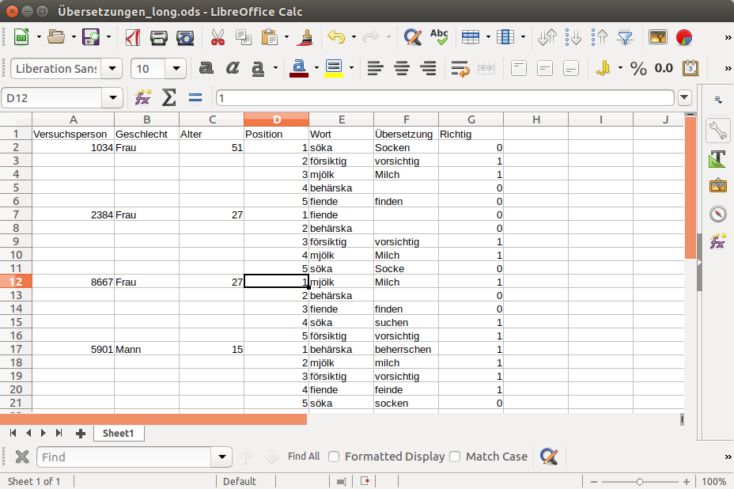
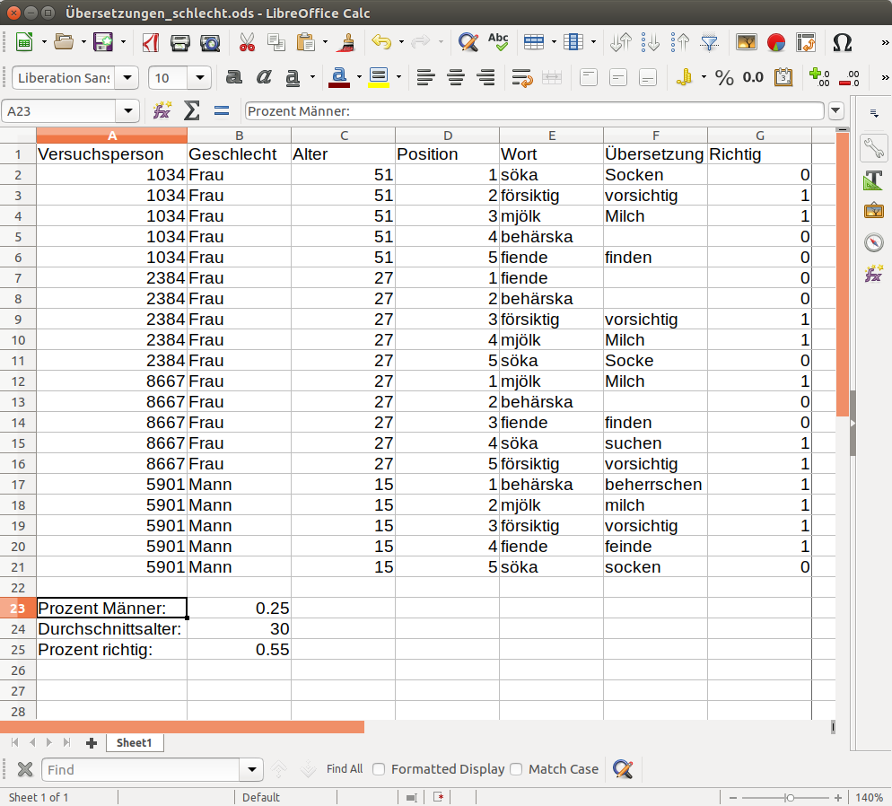

install.packages("here")Working with datasets in R: A primer
Goal
The goal of this primer is to furnish you with the basic tools and knowledge to organise, manipulate, and query datasets in research contexts.
Type, don’t copy-paste – at home
You’re going to take away much more from this primer if you copy the code snippets by typing them rather than by copy-pasting them. That said, I strongly advise you to do so in your own time and not as you’re attending the lecture: Some things are bound to go wrong (perhaps a comma in the wrong spot, a missing bracket or an upper-case letter that should have been a lower-case one), and as you’re trying to fix the errors, you’ll lose track of the lecture.
So work through the code snippets at home, and be patient with yourselves.
Compiling and organising a dataset
Let’s say we’ve run a study in which speakers of German read a couple of words in Swedish and were asked to guess what these words might mean. An excerpt from the raw data might look like this, with the words having been shown to the participants in the order in which they are listed:
- Participant 1034. Woman, 51 years.
- Word: söka. Translation: Socken (incorrect).
- Word: försiktig. Translation: vorsichtig (correct).
- Word: mjölk. Translation: Milch (correct).
- Word: behärska. No translation given.
- Word: fiende. Translation: finden (incorrect).
- Participant 2384. Woman, 27 years.
- Word: fiende. No translation given.
- Word: behärska. No translation given.
- Word: försiktig. Translation: vorsichtig (correct).
- Word: mjölk. Translation: Milch (correct).
- Word: söka. Translation: Socke (incorrect).
- Participant 8667. Woman, 27 years.
- Word: mjölk. Translation: Milch (correct).
- Word: behärska. No translation given.
- Word: fiende. Translation: finden (incorrect).
- Word: söka. Translation: suchen (correct).
- Word: försiktig. Translation: vorsichtig (correct).
- Participant 5901. Man, 15 years.
- Word: behärska. Translation: beherrschen (correct).
- Word: mjölk. Translation: milch (sic.; correct).
- Word: försiktig. Translation: vorsichtig (correct).
- Word: fiende. Translation: feinde (sic.; correct; actually Feind).
- Word: söka. Translation: socken (sic.; incorrect).
There are lots of ways in which we could represent these data in a spreadsheet. Let’s look at a few rules of thumb.
Long datasets tend to be more practical than wide ones
We’ll concern ourselves strictly with rectangular datasets. These are datasets in which the information is laid out in rows and columns and in which all columns have the same length, and all rows have the same width. Examples of non-rectangular data formats are JSON and XML – see here.
Broadly speaking, we can organise our data in a wide format or in a long format. In a wide format, all pieces of information related to a unit of data collection are organised in a single row. For instance, we could think of each participant in the study as a unit of data collection, in which case we could lay out the data as in Figure 1. Note that the spreadsheet contains a column for each word that indicates the position in which it was presented to the participants. Alternatively, we could think of each word as a unit of data collection and organise the data like in Figure 2.


In a long format, all pieces of information pertaining to an observational unit are organised in a single row. It’s difficult to precisely define what units of data collection and observational units are, and it wouldn’t be too useful to have a precise definition, anyway. But in the present example, the observational units would be the individual responses, i.e., the individual translations. Figure 3 shows how the same data look like when organised in a long format.

It’s usually easier to work with data in a long-ish format compared to with data in a wide-ish format. Moreover, when you do need your data in a wide-ish format for data analysis, converting a longer dataset to a wider one is typically easier than vice versa.
Make sure that all rows can be interpreted independently of one another. What we want to avoid is that we can’t make sense of the data in some row because we need data from another row to do so, and this other row was deleted, or the order of the rows has changed, etc. For instance, in Figure 3, we also have a column with the Positions, even though we could have derived this information from the ordering of the rows. But once a row gets deleted or once the order of the rows gets permuted, we’d lose this piece of information. So don’t organise the data like in Figure 4.

Datasets are different from tables
Figure 4 employs a trick often used when presenting data in a table: leave out information that didn’t change compared to the last row. But the goal of a table is to communicate data or patterns in data, not to organise the data so that they can be analysed.
Furthermore, the dataset needs to be rectangular. Figure 5 shows what not to do: The additional rows reporting some averages don’t fit in with the rest of the dataset (“Prozent Männer:” is not the ID of a Versuchsperson, and “30” is not a Geschlecht.)

Use short but descriptive variable names
Make your life during the data analysis easier by using short but descriptive labels for variables or values in the spreadsheet. By doing so, you avoid that you constantly need to look up in the project’s codebook what the labels mean, thereby reducing the likelihood that you’ll make errors. Moreover, you save yourself some typing.
A few examples:
- When working with questionnaire data, don’t simply label the columns with the number of the question in the questionnaire (e.g.,
Q3orQuestion17). Instead, use more descriptive labels such asDegreeFatheroderDialectUse. - If you have a column labelled
Sexthat is filled with 1s and 0s, then you may end up having to look up if the 1s refer to men or to women. Instead, either fill the column withm(an)andw(oman)values, or rename the columnMan, so that you know that the 1s refer to men. - Try to strike a balance between descriptive power and length. For instance, a variable named
HowOftenDoYouSpeakStandardGermanwill get on your nerves before long;SpeakStandardcould be sufficient.
Use a codebook
Having short and descriptive variable names is not an excuse for not maintaining a codebook that spells out precisely what each variable in the dataset refers to. [Example of a codebook].
Label missing values unambiguously
In Figure 3, I left some of the translation cells empty. From this, I can deduce that the word was presented to the participant but that he or she did not translate the word. However, it could have been possible that some participants were inadvertently never shown a particular word (e.g., due to a programming error) or that some of the participants’ were irretrievably lost. We should enable ourselves to distinguish between these cases, for instance by marking the latter cases using NA (not available).
If you want to be able to tell apart different reasons for missing data (such as data loss, programming errors, participants’ refusal to answer a certain question, participants’ being absent from a data collection etc.), it’s probably easiest to just write NA in the column and add another column with comments detailing the reasons for the missingness.
Don’t use numbers to encode missingness
Some data logging applications use -99 or -9999 to encode missingness. The problem with this is that, sometimes, -99 or -9999 don’t immediately stand out as conspicuous values.
Reduce redundancy by splitting up datasets
The spreadsheet above contain several repeated pieces of information. For instance, for all five translations provided by participant 1034, we indicated that they were provided by a woman aged 51. We can eliminate this source of redundancy by managing a handful of smaller datasets rather than just a single large one. More specifically, we can manage a dataset that contains all information that depends just on the participants, see Figure 6. Each participant has a unique ID (here: Versuchsperson), and the dataset contains contains a single row for each participant. If we need to correct an entry related to, say, some participant’s age, we just need to change it here – once – rather than five times in the larger dataset.

By the same token, we can put all information that depends just on the stimuli used in a separate dataset, see Figure 7. Here, too, each stimulus has a unique ID (here: Wort).

The third dataset then only contains information that depends on the combination of a particular participant and a particular word. As shown in Figure 8, each row in this dataset contains the IDs of both the participant and the stimulus that the response is related to. But any other information related to just the word or to just the participant is left out of this dataset. As we’ll see shortly, we can easily add the information related to the participants or to the words to this dataset from the other two datasets.

Miscellaneous tips
- Mind capitalisation. For some programs and computer languages,
Frauandfrauare the same value; for others (including R), they are not. - Mind trailing spaces.
Mann(with trailing space) andMann(without trailing space) are different values to a computer. - Special symbols, including the Umlaut, sometimes lead to problems, especially when collaborating with people whose localisation settings differ from yours.
- Format dates in the YYYY/MM/DD format. This way, if you alphabetically sort the data, they’re already in chronological order.
- Don’t use colour-coding in your spreadsheet. Or if you do use it, be aware that you’ll lose this information once you import your data into your statistics program.
Work as little as possible in the spreadsheet
After you’ve entered your data into a spreadsheet, all further steps in your analysis should be carried out in R (or Python, or Julia, or what-have-you). Don’t calculate, sort, copy, paste, move, reshape, draw graphs etc. in Excel or whatever spreadsheet program you prefer. Treat your finished spreadsheet as the immutable source of data from which your results will be obtained, so that when in doubt, it’s clear which file you should go back to.
When using R (or Python, or Julia, or whatever), use (a) script(s) to read in the original dataset and convert the data in it to a format more amenable to analysis, but do not overwrite the original file.
Use data validation
When working in a spreadsheet program, you can use the data validation functions to minimise the chances that you enter faulty data. For instance, if you know that the possible responses to a certain questions are either integers from 0 to 5 or NA, make a data validation rule that prevents you from entering erroneous data.
Also see the blog post A data entry form with failsafes.
Reading in datasets
With the data available in a rectangular spreadsheet format, the next challenge is to load them into a program capable of analysing them. Several (free) options are available (JASP, Python, Julia, …), but we’ll focus on R complemented with the tidyverse suite. The main reasons for this are that R is more popular in the humanities and the social sciences and that I’m just more proficient in R. Hadley Wickham lists some further reasons.
R, RStudio, and the tidyverse
To install R, visit the R Project website.
In addition, I recommend you install RStudio, which facilitates working with R. To do so, visit the Posit website and download the open source desktop version of RStudio.
Once you’ve installed R and RStudio, open RStudio, and go to Tools > Global options.... In the tab General, Basic, make sure to untick the option ‘Restore .RData into workspace at startup’ and select the option ‘never’ for ‘Save workspace to .RData on exit’. These settings help ensure that you’re starting from a clean slate each time you open RStudio and prevent the results of calculations in previous sessions from messing up your analyses. Additionally, in the tab Code, Editing, tick the box next to ‘Use native pipe operator, |>’. We’ll encounter this pipe operator shortly. Finally, I recommend setting the default text encoding to UTF-8 (Code, Saving).
The functionality of R can be extended by installing further packages. We’ll be using two of these. The first is the here package, which makes it easier to read in data files if you’re working in a complex file system. Nothing in what follows hinges on your using the here package or not; I just find that it makes my life easier. To install the here package, type the following command at the R prompt:
The second package isn’t optional if you want to following along with the rest of this course: The tidyverse actually bundles a couple of package that are based on a set of shared principles and that facilitate working with datasets enormously. You can install it like so:
install.packages("tidyverse")
R projects
library(here)Warning: package 'here' was built under R version 4.3.3here() starts at C:/Users/VanhoveJ/switchdrive/Documents/Workshops/DatasetsAndGraphslibrary(tidyverse)Warning: package 'tidyverse' was built under R version 4.3.3── Attaching core tidyverse packages ──────────────────────── tidyverse 2.0.0 ──
✔ dplyr 1.1.2 ✔ readr 2.1.4
✔ forcats 1.0.0 ✔ stringr 1.5.0
✔ ggplot2 3.4.2 ✔ tibble 3.2.1
✔ lubridate 1.9.2 ✔ tidyr 1.3.0
✔ purrr 1.0.1 ── Conflicts ────────────────────────────────────────── tidyverse_conflicts() ──
✖ dplyr::filter() masks stats::filter()
✖ dplyr::lag() masks stats::lag()
ℹ Use the conflicted package (<http://conflicted.r-lib.org/>) to force all conflicts to become errorsIncidentally, you don’t need to install these packages every time you need them, but you do need to load them every time you need them in a new session. I recommend including the packages you need at the top of your script.
Excel files
We’ll focus on reading in two kinds of spreadsheets: Excel spreadsheets in the XLS(X) format, and CSV files.
In order to read in XLS(X) files, we need the readxl package. This package is part of the tidyverse suite, but it does not get loaded automatically as you load the tidyverse suite. So we load it separately:
library(readxl)Assuming the file uebersetzungen.xlsx is located in the data subdirectory of your R project directory, we can read it into R as follows.
translations <- read_excel(here("data", "uebersetzungen.xlsx"))The dataset is now loaded as a so-called tibble named translations. We can display it by simply typing its name at the prompt:
translations# A tibble: 20 × 5
Versuchsperson Position Wort Übersetzung Richtig
<dbl> <dbl> <chr> <chr> <dbl>
1 1034 1 söka Socken 0
2 1034 2 försiktig vorsichtig 1
3 1034 3 mjölk Milch 1
4 1034 4 behärska <NA> 0
5 1034 5 fiende finden 0
6 2384 1 fiende <NA> 0
7 2384 2 behärska <NA> 0
8 2384 3 försiktig vorsichtig 1
9 2384 4 mjölk Milch 1
10 2384 5 söka Socke 0
11 8667 1 mjölk Milch 1
12 8667 2 behärska <NA> 0
13 8667 3 fiende finden 0
14 8667 4 söka suchen 1
15 8667 5 försiktig vorsichtig 1
16 5901 1 behärska beherrschen 1
17 5901 2 mjölk milch 1
18 5901 3 försiktig vorsichtig 1
19 5901 4 fiende feinde 1
20 5901 5 söka socken 0
Data frames and tibbles
Rectangular data sets are referred to as data frames in R. The tidyverse slightly changes their functionality, mostly in order to allow for prettier displaying, and refers to them as tibbles.
Empty strings interpreted as missing
Note that the empty cells are automatically interpreted as missing data (<NA>). The documentation of the read_excel function, which you can access by typing ?read_excel at the R prompt, suggests that we can override this behaviour, but we can’t.
If, instead of printing the entire tibble at the prompt, we just want to display the first few rows, we can use slide_head:
slice_head(translations, n = 4)# A tibble: 4 × 5
Versuchsperson Position Wort Übersetzung Richtig
<dbl> <dbl> <chr> <chr> <dbl>
1 1034 1 söka Socken 0
2 1034 2 försiktig vorsichtig 1
3 1034 3 mjölk Milch 1
4 1034 4 behärska <NA> 0slice_tail works similarly. If you want to display a random selection of rows, you can use slice_sample:
slice_sample(translations, n = 5)# A tibble: 5 × 5
Versuchsperson Position Wort Übersetzung Richtig
<dbl> <dbl> <chr> <chr> <dbl>
1 5901 2 mjölk milch 1
2 2384 2 behärska <NA> 0
3 1034 2 försiktig vorsichtig 1
4 1034 4 behärska <NA> 0
5 5901 3 försiktig vorsichtig 1Again, for details, you can check the documentation of these functions that is available at ?slice_head.
CSV files
A popular format for storing spreadsheets is the CSV format. CSV is short for comma-separated values: Cells on the same row are separated by commas, see Figure 9. Sometimes, text strings are additionally surrounded by quotation marks.

To read in CSV files, we can use the read_csv function, which is part of the readr package, which in turn is automatically loaded when the tidyverse suit is loaded:
translations <- read_csv(here("data", "uebersetzungen.csv"))Rows: 20 Columns: 5
── Column specification ────────────────────────────────────────────────────────
Delimiter: ","
chr (2): Wort, Übersetzung
dbl (3): Versuchsperson, Position, Richtig
ℹ Use `spec()` to retrieve the full column specification for this data.
ℹ Specify the column types or set `show_col_types = FALSE` to quiet this message.translations# A tibble: 20 × 5
Versuchsperson Position Wort Übersetzung Richtig
<dbl> <dbl> <chr> <chr> <dbl>
1 1034 1 söka Socken 0
2 1034 2 försiktig vorsichtig 1
3 1034 3 mjölk Milch 1
4 1034 4 behärska <NA> 0
5 1034 5 fiende finden 0
6 2384 1 fiende <NA> 0
7 2384 2 behärska <NA> 0
8 2384 3 försiktig vorsichtig 1
9 2384 4 mjölk Milch 1
10 2384 5 söka Socke 0
11 8667 1 mjölk Milch 1
12 8667 2 behärska <NA> 0
13 8667 3 fiende finden 0
14 8667 4 söka suchen 1
15 8667 5 försiktig vorsichtig 1
16 5901 1 behärska beherrschen 1
17 5901 2 mjölk milch 1
18 5901 3 försiktig vorsichtig 1
19 5901 4 fiende feinde 1
20 5901 5 söka socken 0We receive a couple of messages (no errors!). These show that the read_csv function correctly recognised that the columns Wort and Übersetzung contain text (‘chr’, character) strings, whereas Versuchsperson, Position and Richtig contain numbers (‘dbl’ for ‘double’, a number format).
Empty strings interpreted as missing
With read_csv, we can specify that only cells containing “NA” are marked as missing data:
translations2 <- read_csv(here("data", "uebersetzungen.csv"), na = "NA")Rows: 20 Columns: 5
── Column specification ────────────────────────────────────────────────────────
Delimiter: ","
chr (2): Wort, Übersetzung
dbl (3): Versuchsperson, Position, Richtig
ℹ Use `spec()` to retrieve the full column specification for this data.
ℹ Specify the column types or set `show_col_types = FALSE` to quiet this message.translations2# A tibble: 20 × 5
Versuchsperson Position Wort Übersetzung Richtig
<dbl> <dbl> <chr> <chr> <dbl>
1 1034 1 söka "Socken" 0
2 1034 2 försiktig "vorsichtig" 1
3 1034 3 mjölk "Milch" 1
4 1034 4 behärska "" 0
5 1034 5 fiende "finden" 0
6 2384 1 fiende "" 0
7 2384 2 behärska "" 0
8 2384 3 försiktig "vorsichtig" 1
9 2384 4 mjölk "Milch" 1
10 2384 5 söka "Socke" 0
11 8667 1 mjölk "Milch" 1
12 8667 2 behärska "" 0
13 8667 3 fiende "finden" 0
14 8667 4 söka "suchen" 1
15 8667 5 försiktig "vorsichtig" 1
16 5901 1 behärska "beherrschen" 1
17 5901 2 mjölk "milch" 1
18 5901 3 försiktig "vorsichtig" 1
19 5901 4 fiende "feinde" 1
20 5901 5 söka "socken" 0Let’s also read in the datasets containing the information pertaining to the participants and items:
participants <- read_csv(here("data", "versuchspersonen.csv"))Rows: 4 Columns: 4
── Column specification ────────────────────────────────────────────────────────
Delimiter: ","
chr (2): Geschlecht, Englisch
dbl (2): Versuchsperson, Alter
ℹ Use `spec()` to retrieve the full column specification for this data.
ℹ Specify the column types or set `show_col_types = FALSE` to quiet this message.items <- read_csv(here("data", "woerter.csv"))Rows: 5 Columns: 2
── Column specification ────────────────────────────────────────────────────────
Delimiter: ","
chr (2): Wort, RichtigeÜbersetzung
ℹ Use `spec()` to retrieve the full column specification for this data.
ℹ Specify the column types or set `show_col_types = FALSE` to quiet this message.
Different CSV formats
If you save an Excel spreadsheet as a CSV file on a French- or German-language computer system, the cells will be separated using semicolons rather than using commas. The reason is that commas are used as decimal separators in French and German. To read in ‘CSV’ files that use semicolons as cell separators, you can use the read_csv2 function.
Incidentally, if you use LibreOffice.org Calc instead of Excel, you can choose which cell separator gets used if you export a spreadsheet as a CSV file.
read_csv vs. read.csv
More seasoned R users are probably already familiar with the read.csv function (with a dot rather than an underscore). The read_csv function is merely the tidyverse counterpart to this function. The practical differences between them are negligible.
Other formats
For reading in data from Google Sheets, see googlesheets4.
For interacting with Google Drive, see googledrive.
For reading in SPSS, Stata and SAS files, see haven.
Joining datasets
Having read in our three datasets as translations, participants, and items, we want to merge these datasets into one large dataset. The most useful function for this is left_join, which takes the dataset passed as its x argument and adds to this the corresponding rows from the y dataset:
all_data <- left_join(x = translations, y = participants)Joining with `by = join_by(Versuchsperson)`Note that the left_join function recognises that the variable shared between both datasets is called Versuchsperson. Hence, the information related to participant 1034 contained in participants is added to each row in translations where the Versuchsperson value is 1034, and similarly for the other participants:
all_data# A tibble: 20 × 8
Versuchsperson Position Wort Übersetzung Richtig Geschlecht Alter Englisch
<dbl> <dbl> <chr> <chr> <dbl> <chr> <dbl> <chr>
1 1034 1 söka Socken 0 Frau 51 B2
2 1034 2 försik… vorsichtig 1 Frau 51 B2
3 1034 3 mjölk Milch 1 Frau 51 B2
4 1034 4 behärs… <NA> 0 Frau 51 B2
5 1034 5 fiende finden 0 Frau 51 B2
6 2384 1 fiende <NA> 0 Frau 27 C1
7 2384 2 behärs… <NA> 0 Frau 27 C1
8 2384 3 försik… vorsichtig 1 Frau 27 C1
9 2384 4 mjölk Milch 1 Frau 27 C1
10 2384 5 söka Socke 0 Frau 27 C1
11 8667 1 mjölk Milch 1 Frau 27 B2
12 8667 2 behärs… <NA> 0 Frau 27 B2
13 8667 3 fiende finden 0 Frau 27 B2
14 8667 4 söka suchen 1 Frau 27 B2
15 8667 5 försik… vorsichtig 1 Frau 27 B2
16 5901 1 behärs… beherrschen 1 Mann 15 B1
17 5901 2 mjölk milch 1 Mann 15 B1
18 5901 3 försik… vorsichtig 1 Mann 15 B1
19 5901 4 fiende feinde 1 Mann 15 B1
20 5901 5 söka socken 0 Mann 15 B1 If you don’t want the left_join function to figure out what the shared variable is, you can specify it explicitly:
all_data <- left_join(x = translations, y = participants, by = "Versuchsperson")If the shared variable has different names in the different datasets, you can use something like
new <- left_join(x = left_dataset, y = right_dataset, by = join_by(var_left == var_right))See ?join_by for more information.
If there are values in the shared variable that occur in the x dataset that don’t occur in the y dataset, the values in the added columns will read NA for these rows.
Further join functions are the following, see ?join for details:
right_join: All entries inyare kept. Corresponding entries inxare added.full_join: All entries both datasets are kept.NAs are added if there is no corresponding entry in the other dataset.inner_join: Only keep entries inxfor which there is a corresponding entry iny. Add these corresponding entries.semi_join: Only keep entries inxfor which there is a corresponding entry iny. Don’t add these corresponding entries.anti_join: Only keep entries inxfor which there are no corresponding entries iny.
In the current example, left_join, full_join and inner_join would all yield the same result. But this isn’t always the case.
Let’s also add the information pertaining to the words:
all_data <- left_join(all_data, items)Joining with `by = join_by(Wort)`Incidentally, another way of achieving the same result is this:
all_data <- translations |>
left_join(participants) |>
left_join(items)Joining with `by = join_by(Versuchsperson)`
Joining with `by = join_by(Wort)`Exercise: join functions
- Use the following code to generate two tibbles called
leftandright:
left <- tibble(A = c("a", "b", "c", NA),
B = c(1, 2, NA, 4))
right <- tibble(B = c(1, 3, 4, 4),
C = c(10, NA, 12, 7))
left# A tibble: 4 × 2
A B
<chr> <dbl>
1 a 1
2 b 2
3 c NA
4 <NA> 4right# A tibble: 4 × 2
B C
<dbl> <dbl>
1 1 10
2 3 NA
3 4 12
4 4 7- Without running these commands, predict what their output would look like:
left_join(x = left, y = right)
right_join(x = left, y = right)
full_join(x = left, y = right)
inner_join(x = left, y = right)
semi_join(x = left, y = right)
semi_join(x = recht, y = left) # !
anti_join(x = left, y = right)
anti_join(x = right, y = left) # !Now run the commands above to verify your predictions.
Create two new tibbles using the code below:
left <- tibble(A = c("a", "b"),
B = c(1, NA))
right <- tibble(B = c(1, NA, NA),
C = c(0, 1, 2))
left# A tibble: 2 × 2
A B
<chr> <dbl>
1 a 1
2 b NAright# A tibble: 3 × 2
B C
<dbl> <dbl>
1 1 0
2 NA 1
3 NA 2- Consult the help page for
left_joinand look up thena_matchesparameter under ‘Arguments’. Predict what the output of the following two commands would look like, and only then check your answer.
left_join(left, right)Joining with `by = join_by(B)`# A tibble: 3 × 3
A B C
<chr> <dbl> <dbl>
1 a 1 0
2 b NA 1
3 b NA 2left_join(left, right, na_matches = "never")Joining with `by = join_by(B)`# A tibble: 2 × 3
A B C
<chr> <dbl> <dbl>
1 a 1 0
2 b NA NAQueries
Selecting by row number
We can select the third row of a dataset like so:
slice(all_data, 3)# A tibble: 1 × 9
Versuchsperson Position Wort Übersetzung Richtig Geschlecht Alter Englisch
<dbl> <dbl> <chr> <chr> <dbl> <chr> <dbl> <chr>
1 1034 3 mjölk Milch 1 Frau 51 B2
# ℹ 1 more variable: RichtigeÜbersetzung <chr>Alternatively, we can write this command as follows. The symbols |> allow us to take an object (here: all_data) and pass it to a function as its first argument. As we’ll later see, we can use |> to string together a host of function calls without creating illegible code.
all_data |>
slice(3)# A tibble: 1 × 9
Versuchsperson Position Wort Übersetzung Richtig Geschlecht Alter Englisch
<dbl> <dbl> <chr> <chr> <dbl> <chr> <dbl> <chr>
1 1034 3 mjölk Milch 1 Frau 51 B2
# ℹ 1 more variable: RichtigeÜbersetzung <chr>We can also select multiple rows:
# Rows 5 and 7
all_data |>
slice(c(5, 7))# A tibble: 2 × 9
Versuchsperson Position Wort Übersetzung Richtig Geschlecht Alter Englisch
<dbl> <dbl> <chr> <chr> <dbl> <chr> <dbl> <chr>
1 1034 5 fiende finden 0 Frau 51 B2
2 2384 2 behärska <NA> 0 Frau 27 C1
# ℹ 1 more variable: RichtigeÜbersetzung <chr># Rows 5 to (and including) 7
all_data |>
slice(5:7)# A tibble: 3 × 9
Versuchsperson Position Wort Übersetzung Richtig Geschlecht Alter Englisch
<dbl> <dbl> <chr> <chr> <dbl> <chr> <dbl> <chr>
1 1034 5 fiende finden 0 Frau 51 B2
2 2384 1 fiende <NA> 0 Frau 27 C1
3 2384 2 behärska <NA> 0 Frau 27 C1
# ℹ 1 more variable: RichtigeÜbersetzung <chr>The results of such actions can be stored as separate objects, for instance, like so:
rows7_12 <- all_data |>
slice(7:12)
rows7_12# A tibble: 6 × 9
Versuchsperson Position Wort Übersetzung Richtig Geschlecht Alter Englisch
<dbl> <dbl> <chr> <chr> <dbl> <chr> <dbl> <chr>
1 2384 2 behärska <NA> 0 Frau 27 C1
2 2384 3 försikt… vorsichtig 1 Frau 27 C1
3 2384 4 mjölk Milch 1 Frau 27 C1
4 2384 5 söka Socke 0 Frau 27 C1
5 8667 1 mjölk Milch 1 Frau 27 B2
6 8667 2 behärska <NA> 0 Frau 27 B2
# ℹ 1 more variable: RichtigeÜbersetzung <chr>We can export this new object as a CSV file like so:
write_csv(rows7_12, here("data", "rows7_12.csv"))Selecting by values
Selecting rows by their number isn’t too useful. But selecting rows satisfying some set of conditions is very useful. Here are a few examples:
# All data corresponding to the word 'fiende'
all_data |>
filter(Wort == "fiende")# A tibble: 4 × 9
Versuchsperson Position Wort Übersetzung Richtig Geschlecht Alter Englisch
<dbl> <dbl> <chr> <chr> <dbl> <chr> <dbl> <chr>
1 1034 5 fiende finden 0 Frau 51 B2
2 2384 1 fiende <NA> 0 Frau 27 C1
3 8667 3 fiende finden 0 Frau 27 B2
4 5901 4 fiende feinde 1 Mann 15 B1
# ℹ 1 more variable: RichtigeÜbersetzung <chr># Note: use '!=' for 'not equal to'.
# All data corresponding to participants older than 30
all_data |>
filter(Alter > 30)# A tibble: 5 × 9
Versuchsperson Position Wort Übersetzung Richtig Geschlecht Alter Englisch
<dbl> <dbl> <chr> <chr> <dbl> <chr> <dbl> <chr>
1 1034 1 söka Socken 0 Frau 51 B2
2 1034 2 försikt… vorsichtig 1 Frau 51 B2
3 1034 3 mjölk Milch 1 Frau 51 B2
4 1034 4 behärska <NA> 0 Frau 51 B2
5 1034 5 fiende finden 0 Frau 51 B2
# ℹ 1 more variable: RichtigeÜbersetzung <chr># Note: use '>=' for 'at least as old as',
# '<=' for 'no older than',
# and '<' for 'younger than'.We can use is.na to check for missing values. Note the use of ! to negate a condition.
all_data |>
filter(is.na(Übersetzung))# A tibble: 4 × 9
Versuchsperson Position Wort Übersetzung Richtig Geschlecht Alter Englisch
<dbl> <dbl> <chr> <chr> <dbl> <chr> <dbl> <chr>
1 1034 4 behärska <NA> 0 Frau 51 B2
2 2384 1 fiende <NA> 0 Frau 27 C1
3 2384 2 behärska <NA> 0 Frau 27 C1
4 8667 2 behärska <NA> 0 Frau 27 B2
# ℹ 1 more variable: RichtigeÜbersetzung <chr>all_data |>
filter(!is.na(Übersetzung))# A tibble: 16 × 9
Versuchsperson Position Wort Übersetzung Richtig Geschlecht Alter Englisch
<dbl> <dbl> <chr> <chr> <dbl> <chr> <dbl> <chr>
1 1034 1 söka Socken 0 Frau 51 B2
2 1034 2 försik… vorsichtig 1 Frau 51 B2
3 1034 3 mjölk Milch 1 Frau 51 B2
4 1034 5 fiende finden 0 Frau 51 B2
5 2384 3 försik… vorsichtig 1 Frau 27 C1
6 2384 4 mjölk Milch 1 Frau 27 C1
7 2384 5 söka Socke 0 Frau 27 C1
8 8667 1 mjölk Milch 1 Frau 27 B2
9 8667 3 fiende finden 0 Frau 27 B2
10 8667 4 söka suchen 1 Frau 27 B2
11 8667 5 försik… vorsichtig 1 Frau 27 B2
12 5901 1 behärs… beherrschen 1 Mann 15 B1
13 5901 2 mjölk milch 1 Mann 15 B1
14 5901 3 försik… vorsichtig 1 Mann 15 B1
15 5901 4 fiende feinde 1 Mann 15 B1
16 5901 5 söka socken 0 Mann 15 B1
# ℹ 1 more variable: RichtigeÜbersetzung <chr>We can string together multiple filter calls:
# incorrect translations to first word
all_data |>
filter(Position == 1) |>
filter(Richtig == 0)# A tibble: 2 × 9
Versuchsperson Position Wort Übersetzung Richtig Geschlecht Alter Englisch
<dbl> <dbl> <chr> <chr> <dbl> <chr> <dbl> <chr>
1 1034 1 söka Socken 0 Frau 51 B2
2 2384 1 fiende <NA> 0 Frau 27 C1
# ℹ 1 more variable: RichtigeÜbersetzung <chr>An alternative way of writing this is as follows:
all_data |>
filter(Position == 1 & Richtig == 0)# A tibble: 2 × 9
Versuchsperson Position Wort Übersetzung Richtig Geschlecht Alter Englisch
<dbl> <dbl> <chr> <chr> <dbl> <chr> <dbl> <chr>
1 1034 1 söka Socken 0 Frau 51 B2
2 2384 1 fiende <NA> 0 Frau 27 C1
# ℹ 1 more variable: RichtigeÜbersetzung <chr>‘or’ conditions can be created using |:
# translations to first word or incorrect translations
all_data |>
filter(Position == 1 | Richtig == 0)# A tibble: 11 × 9
Versuchsperson Position Wort Übersetzung Richtig Geschlecht Alter Englisch
<dbl> <dbl> <chr> <chr> <dbl> <chr> <dbl> <chr>
1 1034 1 söka Socken 0 Frau 51 B2
2 1034 4 behärs… <NA> 0 Frau 51 B2
3 1034 5 fiende finden 0 Frau 51 B2
4 2384 1 fiende <NA> 0 Frau 27 C1
5 2384 2 behärs… <NA> 0 Frau 27 C1
6 2384 5 söka Socke 0 Frau 27 C1
7 8667 1 mjölk Milch 1 Frau 27 B2
8 8667 2 behärs… <NA> 0 Frau 27 B2
9 8667 3 fiende finden 0 Frau 27 B2
10 5901 1 behärs… beherrschen 1 Mann 15 B1
11 5901 5 söka socken 0 Mann 15 B1
# ℹ 1 more variable: RichtigeÜbersetzung <chr>Note that in logic, ‘or’ is always inclusive. Exclusive ‘or’ (‘xor’) can be obtained as follows:
# translations to first word or incorrect translations, but not both
all_data |>
filter(Position == 1 | Richtig == 0) |>
filter(!(Position == 1 & Richtig == 0))# A tibble: 9 × 9
Versuchsperson Position Wort Übersetzung Richtig Geschlecht Alter Englisch
<dbl> <dbl> <chr> <chr> <dbl> <chr> <dbl> <chr>
1 1034 4 behärska <NA> 0 Frau 51 B2
2 1034 5 fiende finden 0 Frau 51 B2
3 2384 2 behärska <NA> 0 Frau 27 C1
4 2384 5 söka Socke 0 Frau 27 C1
5 8667 1 mjölk Milch 1 Frau 27 B2
6 8667 2 behärska <NA> 0 Frau 27 B2
7 8667 3 fiende finden 0 Frau 27 B2
8 5901 1 behärska beherrschen 1 Mann 15 B1
9 5901 5 söka socken 0 Mann 15 B1
# ℹ 1 more variable: RichtigeÜbersetzung <chr>Alternatively,
all_data |>
filter(xor(Position == 1, Richtig == 0)) # A tibble: 9 × 9
Versuchsperson Position Wort Übersetzung Richtig Geschlecht Alter Englisch
<dbl> <dbl> <chr> <chr> <dbl> <chr> <dbl> <chr>
1 1034 4 behärska <NA> 0 Frau 51 B2
2 1034 5 fiende finden 0 Frau 51 B2
3 2384 2 behärska <NA> 0 Frau 27 C1
4 2384 5 söka Socke 0 Frau 27 C1
5 8667 1 mjölk Milch 1 Frau 27 B2
6 8667 2 behärska <NA> 0 Frau 27 B2
7 8667 3 fiende finden 0 Frau 27 B2
8 5901 1 behärska beherrschen 1 Mann 15 B1
9 5901 5 söka socken 0 Mann 15 B1
# ℹ 1 more variable: RichtigeÜbersetzung <chr>Exercise
- Run the following commands:
d1 <- all_data |>
filter(Übersetzung == "vorsichtig")
d2 <- all_data |>
filter(Übersetzung != "vorsichtig")Explain what both commands achieve.
How many rows are there in
d1? How many ind2? How many inall_data? Explain.Create a tibble
d3that contains only those rows inall_datawhere the participants did not translate the word as vorsichtig.
Selecting columns
Sometimes, a dataset is too cumbersome to handle because it contains a lot of irrelevant columns. Using select, we can select those columns that are of interest. For instance,
all_data |>
select(Wort, RichtigeÜbersetzung, Übersetzung) |>
slice_head(n = 5)# A tibble: 5 × 3
Wort RichtigeÜbersetzung Übersetzung
<chr> <chr> <chr>
1 söka suchen Socken
2 försiktig vorsichtig vorsichtig
3 mjölk milch Milch
4 behärska beherrschen <NA>
5 fiende Feind finden There are a couple of auxiliary functions that make it easier to select columns. These are especially useful when working with large datasets. Examples are contains() and starts_with():
all_data |>
select(contains("Übersetzung"))# A tibble: 20 × 2
Übersetzung RichtigeÜbersetzung
<chr> <chr>
1 Socken suchen
2 vorsichtig vorsichtig
3 Milch milch
4 <NA> beherrschen
5 finden Feind
6 <NA> Feind
7 <NA> beherrschen
8 vorsichtig vorsichtig
9 Milch milch
10 Socke suchen
11 Milch milch
12 <NA> beherrschen
13 finden Feind
14 suchen suchen
15 vorsichtig vorsichtig
16 beherrschen beherrschen
17 milch milch
18 vorsichtig vorsichtig
19 feinde Feind
20 socken suchen all_data |>
select(starts_with("Richt"))# A tibble: 20 × 2
Richtig RichtigeÜbersetzung
<dbl> <chr>
1 0 suchen
2 1 vorsichtig
3 1 milch
4 0 beherrschen
5 0 Feind
6 0 Feind
7 0 beherrschen
8 1 vorsichtig
9 1 milch
10 0 suchen
11 1 milch
12 0 beherrschen
13 0 Feind
14 1 suchen
15 1 vorsichtig
16 1 beherrschen
17 1 milch
18 1 vorsichtig
19 1 Feind
20 0 suchen See the tidyselect documentation for further functions.
Further examples
We can string together different types of commands:
# All translations for 'fiende'
all_data |>
filter(Wort == "fiende") |>
select(Übersetzung)# A tibble: 4 × 1
Übersetzung
<chr>
1 finden
2 <NA>
3 finden
4 feinde # All *distinct* translations for 'behärska':
all_data |>
filter(Wort == "behärska") |>
select(Übersetzung) |>
distinct()# A tibble: 2 × 1
Übersetzung
<chr>
1 <NA>
2 beherrschenWithout the pipe (|>), these commands become difficult to read:
distinct(select(filter(all_data, Wort == "behärska"), Übersetzung))# A tibble: 2 × 1
Übersetzung
<chr>
1 <NA>
2 beherrschenPivoting
In the course of an analysis, it is often necessary to convert a long-ish dataset to a wider one, and vice versa. This process is known as pivoting. To illustrate pivoting, we’ll make use of a more realistic – and more complicated – dataset derived from a longitudinal project on the development of reading and writing skills in Portuguese–French and Portuguese–German bilingual children (Desgrippes et al. 2017, Pestana et al. 2017).
We read in the dataset helascot_skills.csv as skills:
skills <- read_csv(here("data", "helascot_skills.csv"))Rows: 1904 Columns: 6
── Column specification ────────────────────────────────────────────────────────
Delimiter: ","
chr (2): Subject, LanguageTested
dbl (4): Time, Reading, Argumentation, Narration
ℹ Use `spec()` to retrieve the full column specification for this data.
ℹ Specify the column types or set `show_col_types = FALSE` to quiet this message.skills# A tibble: 1,904 × 6
Subject Time LanguageTested Reading Argumentation Narration
<chr> <dbl> <chr> <dbl> <dbl> <dbl>
1 A_PLF_1 1 French 0.211 7 NA
2 A_PLF_1 1 Portuguese 0.579 9 6
3 A_PLF_1 2 French 0.684 14 10
4 A_PLF_1 2 Portuguese 0.737 13 9
5 A_PLF_1 3 French 0.947 14 8
6 A_PLF_1 3 Portuguese 0.842 13 NA
7 A_PLF_10 1 French 0.579 5 10
8 A_PLF_10 1 Portuguese 0.316 6 7
9 A_PLF_10 2 French 0.474 10 8
10 A_PLF_10 2 Portuguese 0.579 7 NA
# ℹ 1,894 more rowsFor each participant (Subject) at each Time (T1, T2, T3) and for each LanguageTested (Portuguese, French, German), we have up to three scores, Reading, Argumentation and Narration, arranged next to each other. But let’s say we wanted to compute, for each participant, their progress on each task in each language from T1 to T2 and from T2 to T3. The way the data are laid out at present, this would at best be pretty difficult to do. But it would be easy if only the data were arranged differently, namely with all three measurements per participant and task next to each other. We can convert this dataset to the desired format in two steps.
First, we make the dataset longer by stacking the different scores under each other rather than next to each other. To this end, we use the function pivot_longer() and specify that we want to stack the values in the Reading, Argumentation, and Narration columns under each other, that we want to call the resulting column Score, and that we want to put the column names in a new column called Skill:
skills_longer <- skills |>
pivot_longer(cols = c("Reading", "Argumentation", "Narration"),
names_to = "Skill", values_to = "Score")
skills_longer# A tibble: 5,712 × 5
Subject Time LanguageTested Skill Score
<chr> <dbl> <chr> <chr> <dbl>
1 A_PLF_1 1 French Reading 0.211
2 A_PLF_1 1 French Argumentation 7
3 A_PLF_1 1 French Narration NA
4 A_PLF_1 1 Portuguese Reading 0.579
5 A_PLF_1 1 Portuguese Argumentation 9
6 A_PLF_1 1 Portuguese Narration 6
7 A_PLF_1 2 French Reading 0.684
8 A_PLF_1 2 French Argumentation 14
9 A_PLF_1 2 French Narration 10
10 A_PLF_1 2 Portuguese Reading 0.737
# ℹ 5,702 more rowsThen, we make this tibble wider by putting the three measurements per skill and language next to each other using pivot_wider(). We also prefix the Time values with a T.
skills_wider_time <- skills_longer |>
pivot_wider(names_from = Time, values_from = Score,
names_prefix = "T")
skills_wider_time# A tibble: 2,100 × 6
Subject LanguageTested Skill T1 T2 T3
<chr> <chr> <chr> <dbl> <dbl> <dbl>
1 A_PLF_1 French Reading 0.211 0.684 0.947
2 A_PLF_1 French Argumentation 7 14 14
3 A_PLF_1 French Narration NA 10 8
4 A_PLF_1 Portuguese Reading 0.579 0.737 0.842
5 A_PLF_1 Portuguese Argumentation 9 13 13
6 A_PLF_1 Portuguese Narration 6 9 NA
7 A_PLF_10 French Reading 0.579 0.474 0.316
8 A_PLF_10 French Argumentation 5 10 13
9 A_PLF_10 French Narration 10 8 8
10 A_PLF_10 Portuguese Reading 0.316 0.579 0.368
# ℹ 2,090 more rowsUsing mutate(), we can now easily compute the differences between T1 and T2 and between T2 and T3:
skills_wider_time |>
mutate(ProgressT1_T2 = T2 - T1,
ProgressT2_T3 = T3 - T2) |>
select(Subject, LanguageTested, Skill, ProgressT1_T2, ProgressT2_T3)# A tibble: 2,100 × 5
Subject LanguageTested Skill ProgressT1_T2 ProgressT2_T3
<chr> <chr> <chr> <dbl> <dbl>
1 A_PLF_1 French Reading 0.474 0.263
2 A_PLF_1 French Argumentation 7 0
3 A_PLF_1 French Narration NA -2
4 A_PLF_1 Portuguese Reading 0.158 0.105
5 A_PLF_1 Portuguese Argumentation 4 0
6 A_PLF_1 Portuguese Narration 3 NA
7 A_PLF_10 French Reading -0.105 -0.158
8 A_PLF_10 French Argumentation 5 3
9 A_PLF_10 French Narration -2 0
10 A_PLF_10 Portuguese Reading 0.263 -0.211
# ℹ 2,090 more rowsNow imagine that we wanted to compute, for each participant in each skill at each data collection, the difference between the Portuguese score and the German/French score. The first step is the same, resulting in skills_longer. The second step is now similar, but we put the different languages next to each other:
skills_wider_language <- skills_longer |>
pivot_wider(names_from = LanguageTested, values_from = Score)
skills_wider_language# A tibble: 3,999 × 6
Subject Time Skill French Portuguese German
<chr> <dbl> <chr> <dbl> <dbl> <dbl>
1 A_PLF_1 1 Reading 0.211 0.579 NA
2 A_PLF_1 1 Argumentation 7 9 NA
3 A_PLF_1 1 Narration NA 6 NA
4 A_PLF_1 2 Reading 0.684 0.737 NA
5 A_PLF_1 2 Argumentation 14 13 NA
6 A_PLF_1 2 Narration 10 9 NA
7 A_PLF_1 3 Reading 0.947 0.842 NA
8 A_PLF_1 3 Argumentation 14 13 NA
9 A_PLF_1 3 Narration 8 NA NA
10 A_PLF_10 1 Reading 0.579 0.316 NA
# ℹ 3,989 more rowsIncidentally, not all values for German are NA. It’s just that the first couple of children were tested in French and Portuguese, not in German. We can check this like so:
skills_wider_language |>
slice_sample(n = 10)# A tibble: 10 × 6
Subject Time Skill French Portuguese German
<chr> <dbl> <chr> <dbl> <dbl> <dbl>
1 R_CF_13 3 Reading 0.632 NA NA
2 T_CF_11 3 Reading 0.368 NA NA
3 AL_CP_19 2 Reading NA 0.632 NA
4 Y_PNF_20 3 Narration 7 8 NA
5 U_CD_9 3 Reading NA NA 0.737
6 E_PLD_15 2 Argumentation NA 12 NA
7 Q_CF_9 1 Argumentation 16 NA NA
8 AD_PLF_24 2 Narration 5 7 NA
9 Z_PLF_7 2 Narration 12 8 NA
10 H_PLD_7 2 Narration NA 7 NA If we needed to, we could make this dataset wider still:
skills_wider_time_language <- skills_longer |>
pivot_wider(names_from = c(LanguageTested, Time), # combination of Language and Time
values_from = Score)
skills_wider_time_language# A tibble: 1,410 × 11
Subject Skill French_1 Portuguese_1 French_2 Portuguese_2 French_3
<chr> <chr> <dbl> <dbl> <dbl> <dbl> <dbl>
1 A_PLF_1 Reading 0.211 0.579 0.684 0.737 0.947
2 A_PLF_1 Argumentation 7 9 14 13 14
3 A_PLF_1 Narration NA 6 10 9 8
4 A_PLF_10 Reading 0.579 0.316 0.474 0.579 0.316
5 A_PLF_10 Argumentation 5 6 10 7 13
6 A_PLF_10 Narration 10 7 8 NA 8
7 A_PLF_12 Reading 0.895 NA 1 0.947 0.947
8 A_PLF_12 Argumentation 10 NA 17 18 21
9 A_PLF_12 Narration 11 NA 14 12 12
10 A_PLF_13 Reading 0.474 0.316 0.421 0.526 0.579
# ℹ 1,400 more rows
# ℹ 4 more variables: Portuguese_3 <dbl>, German_1 <dbl>, German_2 <dbl>,
# German_3 <dbl>We could reconvert this tibble to a long one using the code snippet below. The code becomes a bit more complex: The notation French_1:German_3 selects all columns between French_1 and German_3 (including), whereas a so-called regular expression (regex) is used to parse these column names into the Language bit and into the Time bit. For the present example, we don’t need this code snippet since we already have skills_longer. But I wanted to illustrate that such conversions are possible. If you ever need to convert a similar dataset to a longer format, you now know that you can look up the details on the help page of pivot_longer() (?pivot_longer) and take it from there:
skills_wider_time_language |>
pivot_longer(cols = French_1:German_3,
names_to = c("Language", "Time"),
names_pattern = "(.*)_(.*)",
values_to = "Score")# A tibble: 12,690 × 5
Subject Skill Language Time Score
<chr> <chr> <chr> <chr> <dbl>
1 A_PLF_1 Reading French 1 0.211
2 A_PLF_1 Reading Portuguese 1 0.579
3 A_PLF_1 Reading French 2 0.684
4 A_PLF_1 Reading Portuguese 2 0.737
5 A_PLF_1 Reading French 3 0.947
6 A_PLF_1 Reading Portuguese 3 0.842
7 A_PLF_1 Reading German 1 NA
8 A_PLF_1 Reading German 2 NA
9 A_PLF_1 Reading German 3 NA
10 A_PLF_1 Argumentation French 1 7
# ℹ 12,680 more rowsAlternatively, we could have used starts_with(c("French", "Portuguese", "German")) to select the relevant columns.
Summaries
Using the summarise() function, we can easily summarise large tibbles. For instance, we can compute the average (mean) narration and argumentation scores in the skills tibble like so:
skills |>
summarise(mean_narr = mean(Narration, na.rm = TRUE),
mean_arg = mean(Argumentation, na.rm = TRUE))# A tibble: 1 × 2
mean_narr mean_arg
<dbl> <dbl>
1 8.51 13.0We set the na.rm parameter in the mean() call to TRUE since there are several missing observations in both the Narration and Argumentation variable. If we didn’t set na.rm to TRUE, the result of both computations would be NA. By setting na.rm to TRUE, missing observations are ignored.
summarise() is often used in conjuction with group_by(), which splits up a tibble into subgroups. This way, we can straightforwardly compute summaries for different subgroups. For instance, if we wanted to compute the mean narration and argumentation scores for each time of data collection and each language tested, we could use the following code snippet:
skills |>
group_by(Time, LanguageTested) |>
summarise(mean_narr = mean(Narration, na.rm = TRUE),
mean_arg = mean(Argumentation, na.rm = TRUE),
.groups = "drop")# A tibble: 9 × 4
Time LanguageTested mean_narr mean_arg
<dbl> <chr> <dbl> <dbl>
1 1 French 7.79 11.2
2 1 German 6.33 9.46
3 1 Portuguese 8.50 11.4
4 2 French 8.37 13.2
5 2 German 7.06 12.2
6 2 Portuguese 9.16 13.3
7 3 French 10.1 16.3
8 3 German 7.68 13.2
9 3 Portuguese 10.2 16 By setting .groups = "drop", you make sure that the grouping applied to skills doesn’t apply to the summary tibble any more. (It’s not so important.)
We can treat these summary tibbles like ordinary tibbles and apply all of the other commands to them:
skills |>
group_by(Time, LanguageTested) |>
summarise(mean_narr = mean(Narration, na.rm = TRUE),
.groups = "drop") |>
pivot_wider(names_from = "Time", names_prefix = "T", values_from = "mean_narr")# A tibble: 3 × 4
LanguageTested T1 T2 T3
<chr> <dbl> <dbl> <dbl>
1 French 7.79 8.37 10.1
2 German 6.33 7.06 7.68
3 Portuguese 8.50 9.16 10.2 In addition to mean(), here are some further functions that are often used when computing summaries; see the functions’ help pages for details:
median(),quantile(),min()andmax(),sd()andvar()for the sample standard deviation and sample variance, respectively,mad()for the (adjusted) median absolute deviation,n()for obtaining the number of observations,sum().
The mean() function can also be used to compute proportions. Consider the following example. The is.na() function checks if a value is NA (in which case it returns TRUE) or not (FALSE). If we compute the mean() of a bunch of TRUE/FALSE values, we obtain the proportion of values that are TRUE. Similarly, the sum() of a bunch of TRUE/FALSE values is the number of TRUE values. Hence, we can quickly obtain the proportion, and number, of the missing Narration scores for each combination of Time and LanguageTested:
skills |>
group_by(Time, LanguageTested) |>
summarise(
prop_narr_NA = mean(is.na(Narration)),
nr_narr_NA = sum(is.na(Narration)),
n = n(),
.groups = "drop"
)# A tibble: 9 × 5
Time LanguageTested prop_narr_NA nr_narr_NA n
<dbl> <chr> <dbl> <int> <int>
1 1 French 0.297 54 182
2 1 German 0.0815 15 184
3 1 Portuguese 0.141 40 284
4 2 French 0.120 22 183
5 2 German 0.0862 15 174
6 2 Portuguese 0.129 36 280
7 3 French 0.0632 11 174
8 3 German 0.0581 10 172
9 3 Portuguese 0.0923 25 271String manipulation
It often happens that a single cell in a dataset contains different pieces of information. So, too, it is the case in our current example. The first participant in the dataset is referred to as A_PLF_1:
- The
Ain this ID refers to their class. - The
PLFtells us that this participant resided in French-speaking Switzerland (F), had a Portuguese background (P) and took Portuguese heritage and language courses (L). Other abbreviations in the dataset areCD,CF, andCPfor comparison groups in German-speaking Switzerland, French-speaking Switzerland, and Portugal, respectively,PLDfor participants residing in German-speaking Switzerland with a Portuguese background that attended a Portuguese course, as well asPNDandPNFfor participants in German- and French-speaking Switzerland, respectively, with a Portuguese background that did not take Portuguese classes. - The
1uniquely identifies this participant within its class.
It could make sense to split up the information contained in this one cell into multiple cells. Thankfully, the strings in Subject are structured logically and consistently: the different pieces of information are separated using underscores ("_"). We can hence split these strings at the underscores and retrieve the first and second pieces like so:
skills_wider_language <- skills_wider_language |>
mutate(
Class = str_split_i(Subject, "_", 1),
Group = str_split_i(Subject, "_", 2)
)
# check:
skills_wider_language |>
select(Subject, Class, Group) |>
sample_n(10)# A tibble: 10 × 3
Subject Class Group
<chr> <chr> <chr>
1 Q_CF_5 Q CF
2 O_PLD_16 O PLD
3 AL_CP_9 AL CP
4 R_CF_17 R CF
5 L_PLD_9 L PLD
6 W_CF_20 W CF
7 E_PLD_4 E PLD
8 AL_CP_21 AL CP
9 AI_CP_7 AI CP
10 R_CF_9 R CF The examples/exercises will showcase some further applications of string manipulation, but I refer to the (stringr documentation)[https://stringr.tidyverse.org/] for further guidance.
We can now further break down the information contained in the new Group column, for instance as follows:
skills_wider_language <- skills_wider_language |>
mutate(language_group = case_when(
Group == "CP" ~ "Portuguese control",
Group == "CF" ~ "French control",
Group == "CD" ~ "German control",
Group %in% c("PLF", "PNF") ~ "French-Portuguese",
Group %in% c("PLD", "PND") ~ "German-Portuguese",
.default = "other"
)) |>
mutate(heritage_course = case_when(
Group %in% c("PLF", "PLD") ~ 1,
.default = 0
)) |>
mutate(has_German = case_when(
Group %in% c("CD", "PLD", "PND") ~ 1,
.default = 0
)) |>
mutate(has_French = case_when(
Group %in% c("CF", "PLF", "PNF") ~ 1,
.default = 0
)) |>
mutate(has_Portuguese = case_when(
Group %in% c("CF", "CD") ~ 0,
.default = 1
))
# check:
skills_wider_language |>
select(Subject, language_group, heritage_course, has_German, has_French, has_Portuguese) |>
sample_n(10)# A tibble: 10 × 6
Subject language_group heritage_course has_German has_French has_Portuguese
<chr> <chr> <dbl> <dbl> <dbl> <dbl>
1 AG_PLD_2 German-Portugu… 1 1 0 1
2 X_PND_1 German-Portugu… 0 1 0 1
3 AK_CP_19 Portuguese con… 0 0 0 1
4 AD_PLF_3 French-Portugu… 1 0 1 1
5 AI_CP_19 Portuguese con… 0 0 0 1
6 AC_PLD_4 German-Portugu… 1 1 0 1
7 L_PLD_13 German-Portugu… 1 1 0 1
8 L_PLD_14 German-Portugu… 1 1 0 1
9 AL_CP_24 Portuguese con… 0 0 0 1
10 M_PLD_8 German-Portugu… 1 1 0 1A full-fledged example
We had the children in the French/German/Portuguese project write short narrative and argumentative texts in each of their languages at three points in time. The quality of these texts was scored using a grid (Desgrippes et al. 2017); it is these scores that are listed in the skills tibble we worked with above. In addition, 3,060 of these texts were rated for their lexical richness by between two and eighteen naïve (i.e., non-instructed) raters each using a 1-to-9 scale. The individual ratings are available in the file helascot_ratings.csv. Furthermore, we computed a bunch of lexical metrics for each text, such as the number of tokens, the mean corpus frequency of the words occurring in the text, etc. These metric are avilable in the file helascot_metrics.csv; see Vanhove et al. (2019) and Vanhove (2019) for details.
We’ll use these datasets to answer three questions:
- What’s the relation between the average lexical richness ratings per text and the text’s Guiraud index? (The Guiraud index is the ratio of the number of types in a text and the square root of the number of tokens in that text.)
- What’s the relation between the average lexical richness ratings per text and the mean corpus frequency of the words occuring in the texts?
- What’s the relation between the grid-based ratings and the lexical richness ratings?
In doing so, we’ll need to make use of some of the tools introduced earlier.
Reading in the data
Let’s start from a clean slate and read in the three datasets:
skills <- read_csv(here("data", "helascot_skills.csv"))Rows: 1904 Columns: 6
── Column specification ────────────────────────────────────────────────────────
Delimiter: ","
chr (2): Subject, LanguageTested
dbl (4): Time, Reading, Argumentation, Narration
ℹ Use `spec()` to retrieve the full column specification for this data.
ℹ Specify the column types or set `show_col_types = FALSE` to quiet this message.metrics <- read_csv(here("data", "helascot_metrics.csv"))Rows: 3060 Columns: 137
── Column specification ────────────────────────────────────────────────────────
Delimiter: ","
chr (8): Text, Subject, Text_Language, Text_Type, LemmawordsNotInSUBTLEX, ...
dbl (129): Time, TTR, Guiraud, nTokens, nTypes, nLemmas, meanWordLength, MST...
ℹ Use `spec()` to retrieve the full column specification for this data.
ℹ Specify the column types or set `show_col_types = FALSE` to quiet this message.ratings <- read_csv(here("data", "helascot_ratings.csv"))Rows: 29179 Columns: 20
── Column specification ────────────────────────────────────────────────────────
Delimiter: ","
chr (15): Batch, Rater, Text, Subject, Text_Language, Text_Type, Rater_Sex, ...
dbl (4): Trial, Rating, Time, Rater_Age
lgl (1): Rater_NativeLanguageOther
ℹ Use `spec()` to retrieve the full column specification for this data.
ℹ Specify the column types or set `show_col_types = FALSE` to quiet this message.Inspect the structure of these three datasets. (How?) Note that
skillscontains one row per combination ofSubject,TimeandLanguageTested;metricscontains one row per text, i.e., one row per combination ofSubject,Text_Language,Text_TypeandTime;ratingscontains one row per rating, i.e., one row per combination ofRaterandText.
Note
These datasets are already pretty clean and a lot of work (partly manual, partly using R, partly using other tools) went into creating them. See the technical report as well as the R code available from osf.io.
There are many ways to skin a cat. But it seems to me that the following course of action is reasonable:
- Using
ratings, compute the averageRatingper text. - Add these average ratings to
metricsand draw some plots. (More on plotting in the second part!) - Make
skillslonger and add the average ratings to it. Then draw some more plots.
Average rating per text
rating_per_text <- ratings |>
group_by(Text, Subject, Text_Language, Text_Type, Time) |>
summarise(mean_rating = mean(Rating),
n_ratings = n(),
.groups = "drop")
Exercise
Some of the raters consider themselves native speakers of several languages (bi-French etc.), others consider themselves monolingual native speakers (mono-French etc.):
table(ratings$Rater_NativeLanguage)
bi-French bi-German bi-Portuguese mono-French mono-German
1049 2241 728 6235 14149
mono-Portuguese
4777 What could you do if you wanted to base the average rating per text only on the ratings provided by monolingual raters?
Add to metrics
The tibbles metrics and rating_per_text share a variable (Text), so the average ratings can easily be added to metrics:
metrics_ratings <- metrics |>
left_join(rating_per_text)Joining with `by = join_by(Text, Subject, Text_Language, Text_Type, Time)`We’ll learn in the second part how to draw meaningful data plots, but here’s one way of visualising the relationship between Guiraud and mean_rating:
metrics_ratings |>
ggplot(aes(x = Guiraud, y = mean_rating)) +
geom_point(shape = 1) +
facet_grid(rows = vars(Time, Text_Type),
cols = vars(Text_Language)) +
xlab("Guiraud value") +
ylab("average lexical richness rating")
Similarly, for meanSUBTLEX (average corpus frequency):
metrics_ratings |>
ggplot(aes(x = meanSUBTLEX, y = mean_rating)) +
geom_point(shape = 1) +
facet_grid(rows = vars(Time, Text_Type),
cols = vars(Text_Language)) +
xlab("mean SUBTLEX frequency") +
ylab("average lexical richness rating")
correlations <- metrics_ratings |>
group_by(Text_Language, Time, Text_Type) |>
summarise(
cor_guiraud = cor(mean_rating, Guiraud),
cor_frequency = cor(mean_rating, meanSUBTLEX)
)`summarise()` has grouped output by 'Text_Language', 'Time'. You can override
using the `.groups` argument.correlations# A tibble: 18 × 5
# Groups: Text_Language, Time [9]
Text_Language Time Text_Type cor_guiraud cor_frequency
<chr> <dbl> <chr> <dbl> <dbl>
1 French 1 arg 0.526 -0.0353
2 French 1 narr 0.565 -0.150
3 French 2 arg 0.525 -0.0847
4 French 2 narr 0.657 -0.0964
5 French 3 arg 0.654 -0.205
6 French 3 narr 0.618 -0.299
7 German 1 arg 0.710 -0.0747
8 German 1 narr 0.616 -0.162
9 German 2 arg 0.643 -0.288
10 German 2 narr 0.758 -0.314
11 German 3 arg 0.694 -0.241
12 German 3 narr 0.704 -0.257
13 Portuguese 1 arg 0.703 0.196
14 Portuguese 1 narr 0.716 0.0248
15 Portuguese 2 arg 0.764 0.0662
16 Portuguese 2 narr 0.605 0.0729
17 Portuguese 3 arg 0.777 0.222
18 Portuguese 3 narr 0.692 -0.0693Add to skills
rating_gridscore <- skills |>
pivot_longer(Reading:Narration, names_to = "skill",
values_to = "grid_score") |>
filter(skill != "Reading") |>
mutate(Text_Type = case_when(
skill == "Argumentation" ~ "arg",
skill == "Narration" ~ "narr"
)) |>
full_join(rating_per_text,
by = join_by(Text_Type, Subject, Time, LanguageTested == Text_Language))rating_gridscore |>
filter(!is.na(grid_score)) |>
filter(!is.na(mean_rating)) |>
ggplot(aes(x = mean_rating, y = grid_score)) +
geom_point(shape = 1) +
facet_grid(rows = vars(Time, Text_Type),
cols = vars(LanguageTested))
rating_gridscore |>
filter(!is.na(grid_score)) |>
filter(!is.na(mean_rating)) |>
group_by(LanguageTested, Time, Text_Type) |>
summarise(
cor_score = cor(mean_rating, grid_score),
.groups = "drop"
)# A tibble: 18 × 4
LanguageTested Time Text_Type cor_score
<chr> <dbl> <chr> <dbl>
1 French 1 arg 0.391
2 French 1 narr 0.445
3 French 2 arg 0.395
4 French 2 narr 0.389
5 French 3 arg 0.490
6 French 3 narr 0.487
7 German 1 arg 0.585
8 German 1 narr 0.282
9 German 2 arg 0.522
10 German 2 narr 0.512
11 German 3 arg 0.499
12 German 3 narr 0.428
13 Portuguese 1 arg 0.528
14 Portuguese 1 narr 0.417
15 Portuguese 2 arg 0.572
16 Portuguese 2 narr 0.372
17 Portuguese 3 arg 0.557
18 Portuguese 3 narr 0.506Suggestions for reading
The Bible for working with tibbles in R is Wickham et al.’s R for Data Science, which is freely available from r4ds.hadley.nz.